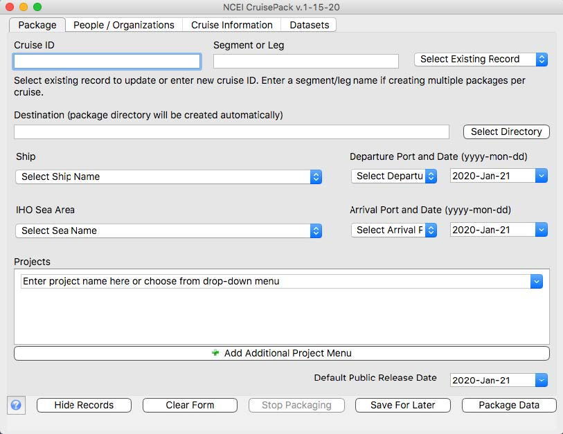
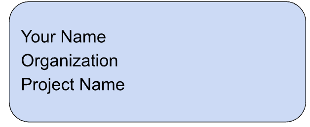

Submitting Data
In order to support as many projects and data sources as possible, the Ocean Acoustics team has developed tools to standardize the way data are submitted to the archive.
The tools: - Enable easy entry of metadata by data providers, which it then uses to generate machine-parseable JavaScript Object Notation (JSON) metadata records - Copy all files identified to be sent to the archive to a specified location, such as an external hard drive - Create a checksum manifest file to ensure data integrity is maintained during transit
The tools automatically build a “data package,” a standardized structure that conforms to the BagIt specification, that efficiently feeds into the archive’s ingest pipeline.
Preparing Water Column Sonar Data to Submit to the Archive
CruisePack
CruisePack is a free, stand-alone executable designed to simplify the packaging of cruise-based data for submission to the NCEI Water Column Sonar Data Archive. It is compatible with most computers and features an intuitive Graphical User Interface for entering metadata about the cruises and datasets.

The water column sonar database primarily maintains raw (as collected) data files in the instrument’s vendor-specific format (e.g., .raw, .wcd). However, other supplemental data (sound speed profiles, tides, vessel offsets, biological data, cruise reports, etc.) are also accepted.
To enable discovery and access of the data through the NCEI Water Column Sonar Map Viewer, please ensure navigation datagrams are included in the sonar data files (e.g., *.wcd).
Data can be submitted through shipping external hard drives, uploading to NCEI’s FTP server, or data copy using rsync through a secure shell login (Linux).
For more information on sending data to the water column sonar archive, see the WCSD tab of the Submission Guidelines.
Supported Instruments / File Formats
NCEI can accept files from most instruments capable of collecting water column sonar data. Currently supported instruments from these manufacturers include:
- Kongsberg
- All EM instruments that record in .wcd & .kmwcd format such as:
- EM122
- EM2040
- EM302
- EM3002
- EM710
- M3 instruments that record in .imb format
- All EM instruments that record in .wcd & .kmwcd format such as:
- Simrad
- Multibeam instruments that record in .raw format:
- ME70
- MS70
- Singlebeam instruments that record in .raw format:
- EK500
- EK60
- ES60
- EK80
- ES80
- Multibeam instruments that record in .raw format:
- Reson
- Multibeam instruments that record in .s7k format:
- SeaBat 7125
- Multibeam instruments that record in .s7k format:
If your raw sonar data are not in one of the supported formats or from a sonar system not listed above, email wcd.info@noaa.gov to discuss options.
Preparing Passive Acoustic Data to Submit to the Archive
Recommendations for the passive acoustic community on formatting, metadata, and submitting passive acoustic data to the NCEI Passive Acoustic Data Archive can be found in the Archive Resources tab of the NCEI Passive Acoustic Data Archive project page.
PassivePacker
PassivePacker is the standalone executable with a Graphical User Interface to support preparation of passive acoustic datasets to be submitted to the archive. This tool works well for packaging a low number (<10) of datasets.
Detailed guidance on how to use PassivePacker can be found in the web-hosted manual.
PACE
The Passive Acoustic Collection Engine (PACE) tool provides a programmatic approach to packaging passive acoustic data for submission to NCEI. PACE is designed for users with a need to submit large numbers of datasets to NCEI and/or users who manage metadata in a system such as Tethys or a relational database. PACE can be controlled via a GUI or from the command line (CLI) and supports user-created metadata spreadsheets or direct integration with database systems. PACE creates data packages like those created by PassivePacker without the need for PassivePacker’s manual metadata entry.
JSON and Excel metadata templates for PACE can be found here. PACE internally creates JSON files to hold onto translator, metadata, and package objects. The provided templates allow you to create these objects directly. You can either insert them into the “.pace” directory that can be found in your home directory if you have booted up PACE on your local machine, or you can use the PACE command line interface to load them in. Follow the instructions at the top of the JSON template files.
For the latest release go here.
Guidance is continually added to the PACE GitHub but is not yet as detailed as we like. Contact the team at pad.info@noaa.gov for more information.
File Formats
The passive acoustic data archive accepts both audio files and data products. Data can come from stationary marine, mobile marine or terrestrial deployments. Currently supported data products include sound level metrics, detections, sound propagation models, and sound clips. We are open to archiving other types of data products. Contact the archive team for more information.
Audio files need to be in a standard format, such as .wav, x.wav, .aif, .flac or .mp3. Raw instrument file formats such as .dat are not accepted. Please contact the archive if you have questions regarding audio file formats.
Data product file formats include .csv, .txt., .nc, and .wav. Similar to the audio files, proprietary, software-specific formats are not allowed.
File Names
Submitted files can only include the following special characters in their names: _ - .
The structure of the timestamp in the filename must be consistent throughout a data package
Audio File Compression
Passive acoustic data are voluminous. To save space in our storage systems and minimize the data volume for deliveries to end users, we use the Free Lossless audio Codec (FLAC) to compress the audio files before archiving. The .flac file format is natively supported by most processing software. However, if a user needs files in an uncompressed format, FLAC can be used to decompress the files. The general command to decompress is flac -d <filename>.flac To ensure any third-party system metadata in the files is preserved, use the --keep-foreign-metadata control flag when decompressing. Additional information on using FLAC can be found on the FLAC command line page.
FLAC compression will reduce files 50% or more depending on file characteristics, so we encourage data providers to FLAC compress their files before submitting to the archive. This allows a lot more data to be submitted at a time and saves time during the archiving step.
PLease note, there are limitations in the number of channels that the flac compression can accommodate and flac does not provide any additional compression for .mp3 formats.
Use the tag -keep-foreign-metadata when compressing the files to esure any metadata added by your processing software is retained. Please contact the archive if you have questions regarding FLACing your data before submission.
Submitting Data Packages to the Archive
Data packages can be submitted using several different pathways depending on your needs and size of datasets.
Shipping External Hard Drives
Naming & labeling is really important! Your external hard drive cannot contain any spaces within its name. A good practice is to replace spaces with underscores. For example: “Seagate_Expansion_Drive”
Label the outside of your external hard drive with the following information. Please do not put the label over the hard drive’s serial number.

When your drive is ready to ship, please contact the team pad.info@noaa.gov for a shipping address.
2. Uploading to NCEI’s FTP server
This option is only available for low volume data, <200 GB. Please work with the Ocean Acoustic team to determine if submitting data via FTP will work for you.
3. Transferring by Cloud
In some cases, we can archive data that are on a cloud platform Some platform requirements include free egress for the NCEI Ocean Acoustic team and the bucket is within a NOAA FISMA boundary. We’ve successfully received data and subsequently archived data from cloud buckets before and hope to expand the occurrences of this pathway as more and more of our NOAA partners move their own data holdings to a cloud environment. Please contact the archive team for more information